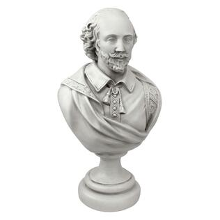

Projects
A gallery of what I've been working on.

Time of Day
Uses javascript to determine the current time of day and display a unique color and image on the webpage.
Style style-season
Uses javascript to determine what selection the user has made (seasons) and determines how to theme the background and what images to determine using said data from lorempicsum.
Daily Grind
Uses javascript to determine what day the user has selected and to give them a unique coffee selection based on said user selection. This also includes pictures and information about the coffee drinks.
Creatures
Uses javascript to determine what type of environment (land or sea) where creatures given in a selection live, it will also differentiate by species.
Dom-play
Uses javascript to highlight dialogue from said characters selected by a user in a play script.
Random Quote Engine
Uses javascript and PHP to retrieve data from a server to display unique quotes on screen in different fonts.